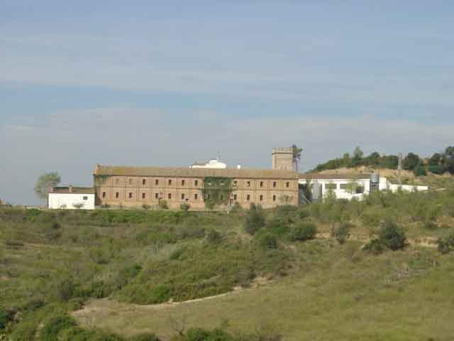
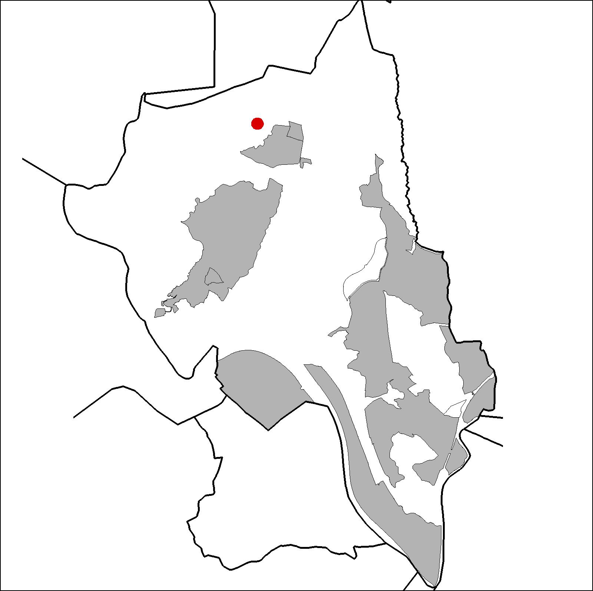

|  |  |
Nom de l’element: Ca n’Ametller
Clau d’identificació: B.1.10
Nucli o indret: Serra de l’Ametller, riera de Salzes.
UTM: X=413.190, Y= 4.595.502, 185 m snm.
Referència cadastral: Poligon 17, parcel·la 9501 (002404200DF19E0001HT)
Règim del sòl: Sòl no urbanitzable.
1.1. Època de construcció i tipologia:
Conjunt d’edificis, datats a partir del 1775, format per la casa pairal de Ca n’Ametller i un celler de Francisco Alegre, aquest darrer d’estil modernista i construït amb fàbrica de totxo vist i elements decoratius de totxo, com ara línies d’importa, les arquivoltes, motllures de cornisa i uns ordres que marquen un modulatge en les façanes. La masia és una edificació lineal de planta baixa i planta pis amb una coberta a dues aigües. Presenta una arcada interessant a l’entrada. La coberta té encavallades de fusta. Té una torre de planta quadrada amb cossos de maó i rematat d’estil medieval, malgrat la seva data de construcció sigui posterior. A part del celler existeix un habitatge en el centre del conjunt, un taller, dos cossos annexes destinats a garatge agrícola, una vivenda annexe a la façana principal que és utilitzat pel masover. També té un cos lineal annexe destinat a granja i alguns volums més propis de l’activitat a la que és destinada l’immoble. La porta d’accés a la masia i el mur exterior són obra de l’arquitecte Moncunill. Té un mosaic de ceràmica a la porta d’accés, on es representa l’elaboració del vi.
1.2. Estat de conservació:
Molt bo. Tots els elements estructurals de l’edificació estan en bon estat de conservació.
1.3. Ús actual:
Habitatge, agrícola i ramader.
1.4. Accés:
Accés des de la carretera d’Ullastrell o bé des del camí forestal que parteix de la part posterior de CARTISA.
Casa pairal del 1775, formada per diferents edificis i un celler d’estil modernista.
3.1. Usos admesos:
Habitatge rural (màxim 3 habitatges); residencial; hoteler (excepte aparthotel; i amb un màxim de 30 places); oficines i serveis; industria vinculada a productes del camp (industrial, categoria 1ª); educatiu; recreatiu cultural i social; recreatiu de restauració; esportiu.
3.2. Condicions d’ordenació:
Segons Pla Especial a redactar.
3.3. Accés i serveis:
Accés des de la carretera d’Ullastrell o bé des del camí forestal que parteix de la part posterior de CARTISA.
BCIL (Bé Cultural d’Interes Local)